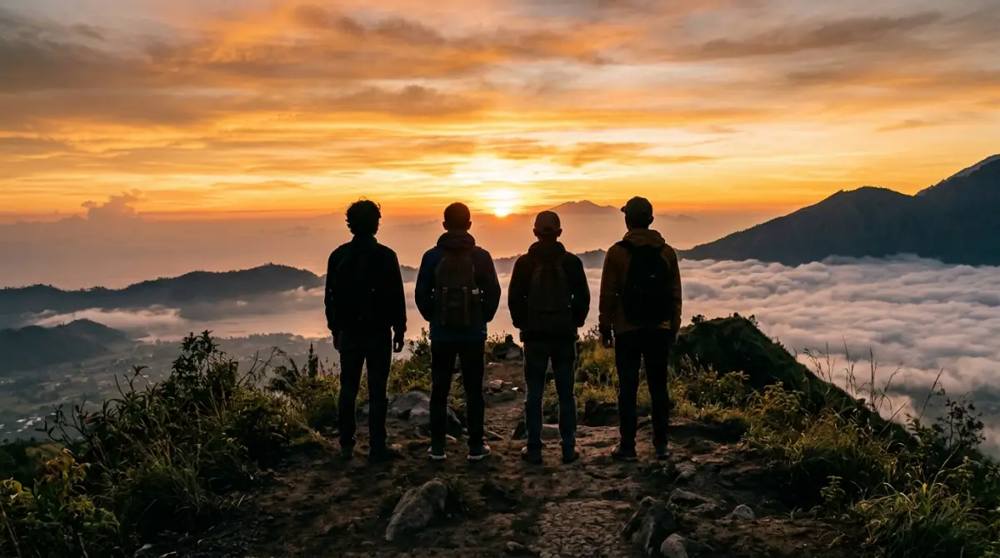

Momen kebersamaan empat sahabat di dalam tenda — bukti bahwa liburan terbaik tidak harus mahal.
Momen kebersamaan empat sahabat di dalam tenda — bukti bahwa liburan terbaik tidak harus mahal.
Coba ingat-ingat lagi, kapan terakhir kali kamu benar-benar tertawa lepas bareng sahabat tanpa memikirkan deadline atau revisi dari si bos? Seringkali, rutinitas kerja dari Senin sampai Jumat menyedot habis energi kita. Akhir pekan yang seharusnya jadi waktu untuk recharge malah cuma habis untuk scroll media sosial seharian di kamar, atau sekadar wacana nongkrong yang selalu berujung batal karena alasan capek. Padahal, masa muda dan kebersamaan dengan sahabat tidak akan bertahan selamanya.
Nanti, ketika masing-masing sudah sibuk dengan urusan keluarga atau pindah kota, mengumpulkan empat orang untuk sekadar ngopi saja susahnya minta ampun. Sebelum kamu menyesal karena kehilangan momen berharga di masa produktif ini, beranikan diri untuk mengambil jeda sejenak. Nggak perlu cuti panjang atau tiket pesawat mahal. Cukup kumpulkan tiga teman kantormu atau circle terdekatmu, dan cobalah opsi menyewa camp 4 orang di akhir pekan. Percayalah, ini adalah pelarian singkat yang paling masuk akal!
Mengapa Memilih Paket Camp 4 Orang?
Ketika memikirkan soal liburan ke alam, hal pertama yang sering muncul di kepala adalah bayangan soal repotnya membawa peralatan dan mahalnya biaya sewa. Tapi, dinamika liburan ini berubah drastis kalau kamu pergi dalam format kelompok kecil, khususnya berempat. Sebagai seseorang yang sering menginisiasi acara outing skala kecil, aku bisa memastikan bahwa format empat orang adalah angka ajaib (magic number) dalam merencanakan perjalanan yang efisien namun tetap intim.
Patungan Terasa Lebih Ringan dan Masuk Akal
Mari kita bicara soal anggaran. Mengambil paket camp 4 orang itu ibarat kamu dan teman-teman patungan membeli pizza ukuran party saat lembur di kantor; harganya terasa sangat ringan karena dibagi rata, tapi semua orang dapat porsi kenyangnya. Saat ini, banyak pengelola camping ground yang menyediakan paket penyewaan tenda sudah include dengan peralatannya.
Biasanya, harga sewa satu tenda berkapasitas empat orang (lengkap dengan matras dan sleeping bag) berkisar antara Rp 150.000 hingga Rp 300.000 per malam, tergantung lokasi dan fasilitas tambahan. Kalau dibagi empat, masing-masing dari kamu hanya perlu mengeluarkan uang seharga satu atau dua cangkir kopi susu kekinian.
Dengan biaya setara nongkrong cantik di kafe kawasan Senopati selama dua jam, kamu sudah bisa mendapatkan tempat menginap selama 24 jam dengan pemandangan alam yang mahal. Sisa budget-nya bisa kalian alokasikan untuk membeli bahan makanan enak, seperti daging untuk grill atau camilan malam.
Kapasitas Tenda yang Pas untuk Keintiman
Selain urusan dompet, tenda dengan kapasitas empat orang menawarkan ruang yang sangat pas untuk interaksi sosial. Jika kamu menyewa tenda yang terlalu besar (misalnya untuk 8-10 orang), suasana seringkali menjadi kurang intim karena kelompok akan terpecah-pecah ke dalam obrolan kecil. Sebaliknya, tenda untuk dua orang kadang terasa terlalu sepi.
Di dalam tenda untuk berempat, ruang geraknya cukup nyaman untuk tidur sejajar, tapi juga cukup rapat untuk menciptakan suasana hangat. Jarak yang dekat ini secara otomatis akan memancing obrolan-obrolan random sebelum tidur. Mulai dari mengeluhkan kebijakan HRD di kantor, curhat urusan asmara yang tak kunjung mulus, hingga sekadar menertawakan kelucuan masa lalu. Chemistry sebuah persahabatan seringkali semakin kuat justru di dalam ruang-ruang sempit yang hangat seperti ini.
Momen Berharga yang Menunggu di Luar Tenda
Memilih paket camp 4 orang bukan cuma soal memindahkan tempat tidur dari kasur empuk ke atas matras. Ini adalah tentang pengalaman (experiential learning) yang kalian dapatkan bersama-sama. Alam selalu punya cara unik untuk menurunkan ego dan memaksa kita untuk bekerja sama dengan cara yang menyenangkan.
Menikmati City Lights dan Obrolan Api Unggun
Salah satu momen yang paling ditunggu saat berkemah di kawasan dataran tinggi adalah peralihan waktu dari sore ke malam. Saat langit mulai gelap, kamu dan teman-teman bisa mulai membagi tugas. Ada yang bertugas menyalakan kompor portabel untuk merebus air, ada yang memotong sosis, dan ada yang bertugas menjaga api unggun agar tetap menyala. Kerjasama kecil ini jauh lebih seru dan minim tekanan dibandingkan dengan membagi job desc saat presentasi pitching klien!
Begitu malam turun sepenuhnya, duduklah melingkari api unggun sambil memandangi city lights atau kerlap-kerlip lampu kota dari atas bukit. Melihat keramaian kota dari kejauhan seringkali memberikan perspektif baru. Kota tempat kalian mati-matian mengejar target dan karir, dari atas sini terlihat begitu damai dan diam. Suasana syahdu ini biasanya akan mengundang deep talk yang berkualitas. Jauh dari distraksi notifikasi pekerjaan, kalian bisa benar-benar hadir untuk satu sama lain, mendengarkan, dan saling memberi dukungan mental.
Mengejar Sunrise yang Mengusir Penat
Di kota, bangun jam 5 pagi biasanya diiringi dengan rasa malas karena harus segera mandi, bersiap menembus kemacetan, atau mengejar jadwal commuter line. Tapi saat camping, bangun di jam yang sama memberikan sensasi yang 180 derajat berbeda. Udara dingin yang menyapu wajah saat kamu membuka resleting tenda akan langsung membuat matamu segar.
Menunggu sunrise atau matahari terbit bersama sahabat adalah ritual wajib. Saat semburat warna jingga mulai merekah dari balik siluet gunung dan lautan awan perlahan terlihat jelas, ada rasa syukur luar biasa yang menyelimuti hati. Momen magis seperti ini bekerja seperti tombol reset untuk otak kita yang sudah terlalu panas oleh beban pekerjaan. Jangan lupa siapkan kopi panas atau teh hangat, dan abadikan momen siluet kalian berempat dengan latar belakang matahari terbit. Foto ini kelak akan menjadi "penyelamat" mood-mu saat sedang jenuh melihat layar spreadsheet di kantor.

Momen magis menunggu matahari terbit bersama sahabat — ritual wajib yang bekerja seperti tombol reset untuk otak yang kelelahan."Selagi fisik kalian masih kuat untuk tidur di atas matras dan tertawa di bawah bintang-bintang, manfaatkanlah akhir pekan ini."
— Refleksi Pelancong ModernTips Sukses Merencanakan Camp 4 Orang
Meskipun terdengar mudah, merencanakan perjalanan alam untuk berempat tetap butuh persiapan agar tidak ada drama di lapangan. Berikut adalah beberapa hal praktis yang perlu kalian sepakati sejak awal.
Pilih Lokasi dengan Akses dan Fasilitas yang Rasional
Tidak semua dari kalian mungkin terbiasa dengan alam liar. Oleh karena itu, pilihlah camping ground yang ramah pemula. Pastikan jalurnya bisa diakses oleh mobil city car atau motor matic biasa tanpa harus melewati jalan berbatu yang ekstrem.
Berdasarkan tinjauan di lapangan pada beberapa lokasi populer di kawasan Bogor atau Bandung, ketersediaan fasilitas dasar sangat menentukan mood liburan. Pastikan lokasi yang kalian pilih memiliki toilet yang bersih dengan air mengalir, area parkir yang tidak terlalu jauh dari area mendirikan tenda, dan ketersediaan stop kontak atau aliran listrik. Percayalah, berebut toilet kotor di pagi hari adalah mimpi buruk yang bisa merusak keseruan liburan kalian.
Cek Kelengkapan Peralatan Tenda dari Pihak Penyewa
Jika kalian memutuskan untuk menggunakan fasilitas sewa tenda di lokasi, jangan ragu untuk menanyakan rincian paket camp 4 orang yang ditawarkan kepada pihak pengelola melalui pesan singkat sebelum berangkat.
Pastikan tenda yang diberikan berjenis double layer (memiliki lapisan luar/flysheet) agar kalian tidak kedinginan atau bocor saat tiba-tiba hujan turun. Tanyakan juga apakah harga sewa sudah termasuk matras karet, sleeping bag untuk empat orang, dan lampu tenda. Jika pihak pengelola tidak menyediakannya secara lengkap, kalian bisa mencari tempat penyewaan alat outdoor di dekat rumah sebelum berangkat untuk menambalnya. Memastikan logistik aman adalah kunci utama agar kalian bisa tidur nyenyak di malam hari.
Penutup
Pada akhirnya, siklus kehidupan pekerja akan selalu berputar: gajian, bayar tagihan, lembur, dan kelelahan. Jika kita terus menunggu waktu yang "benar-benar luang" untuk liburan, waktu itu mungkin tidak akan pernah datang. Selagi fisik kalian masih kuat untuk tidur di atas matras dan tertawa di bawah bintang-bintang, manfaatkanlah akhir pekan ini.
Menyatukan jadwal empat orang dewasa memang penuh tantangan, tapi percayalah, usaha itu akan terbayar lunas ketika kalian duduk bersama mengelilingi api unggun. Jangan sampai nanti kamu hanya bisa melihat foto lama dan menyesal karena dulu terlalu sering membatalkan janji demi membalas email pekerjaan di hari Minggu. Booking paket camp 4 orang kalian sekarang, kemasi barang secukupnya, dan pergilah ciptakan kenangan yang layak diceritakan ulang di masa depan!
FAQ — Paket Camp 4 Orang